This page may take a while to load. Please wait patiently.
November 22nd, 2023
Here is a Windows 11 VM running on a not very competent computer.
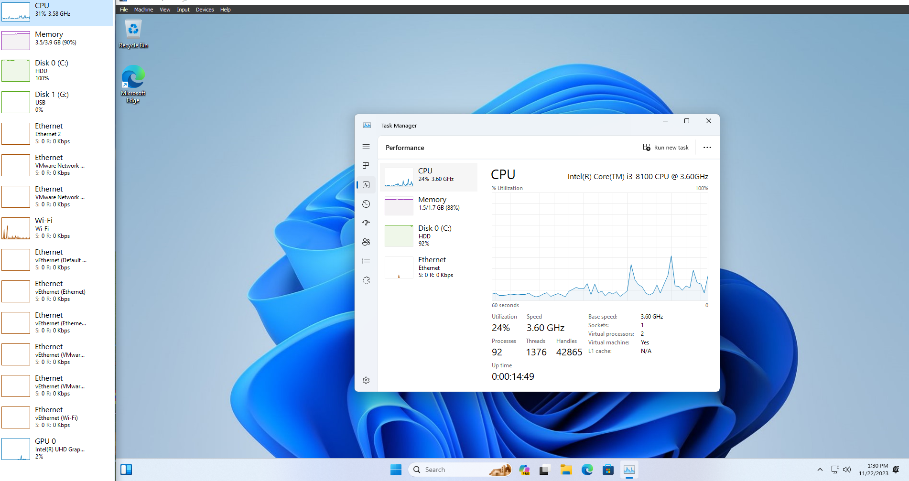December 22nd, 2023
Here is my current desktop with a few files censored.
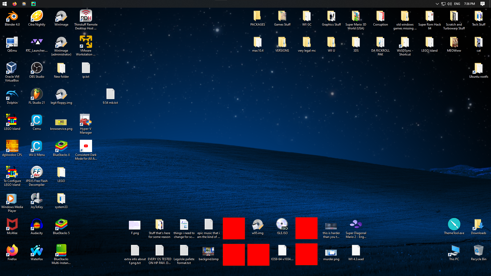February 8th, 2024
Here is Super Cat Tales 2 running natively on Windows with hidden desktop icons and a censored username.

August 13th, 2024
Here is Microsoft .NET throwing a peculiar error.
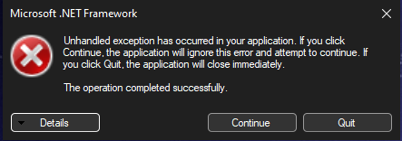October 23rd, 2024
Here is ScratchR being hosted on Windows, an achievement which was last done in ~2013.
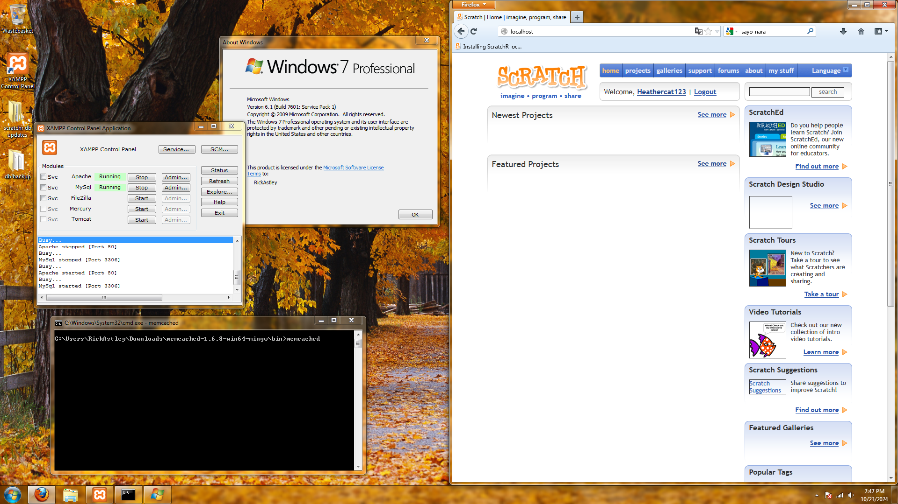November 30th, 2024
Here are a few pictures of the Scratch forums' admin tools as of 2015.
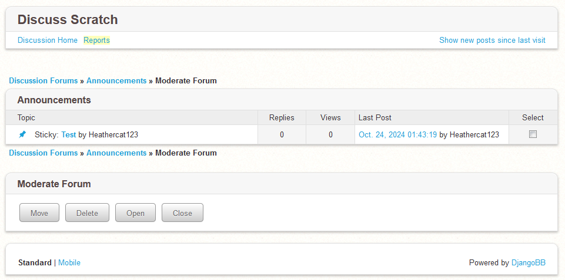 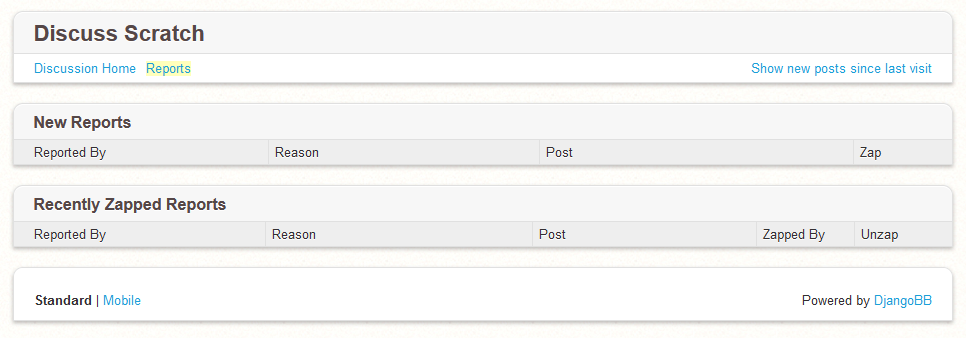February 23rd, 2025
Here is Scratch 2 running on Windows NT 3.51. This picture is outdated since it can now also run on NT 3.5.
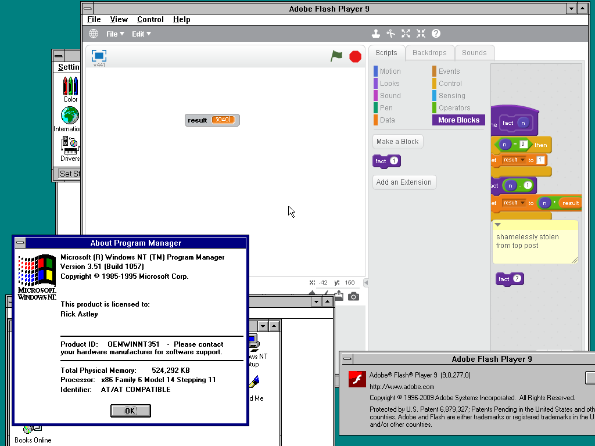March 16th, 2025
Here is Windows XP x64 Edition upgrading to Windows Vista x64. This is normally unsupported.
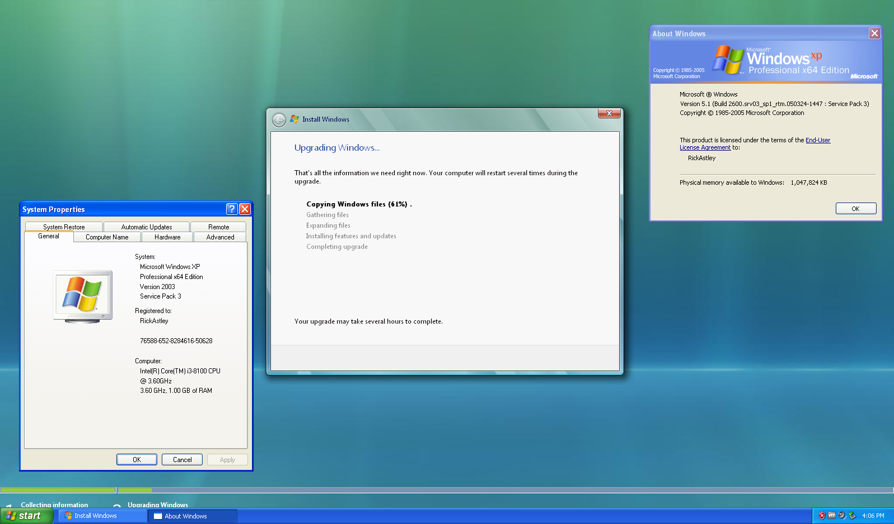March 20th, 2025
Here is Windows asking me to insert a disc in my USB drive. I guess the dialog is hardcoded to the D: drive?
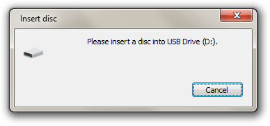April 5th, 2025
Here is my desktop.
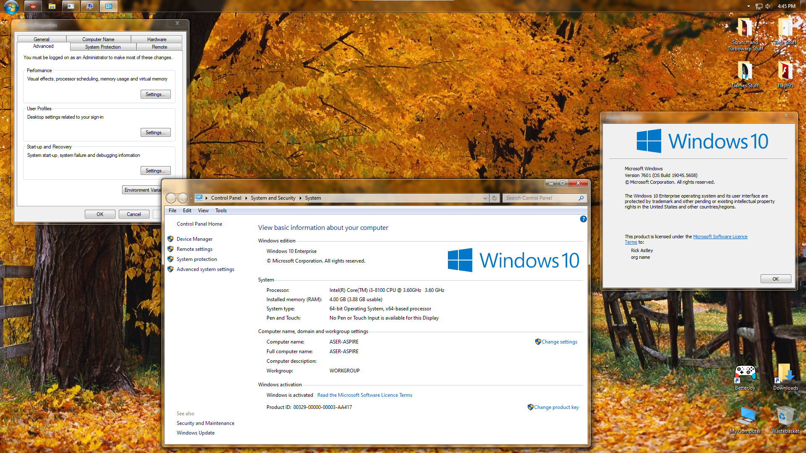Here is a Windows 11 VM inside of Windows XP. 3D acceleration is extremely buggy and as such, I've disabled it.
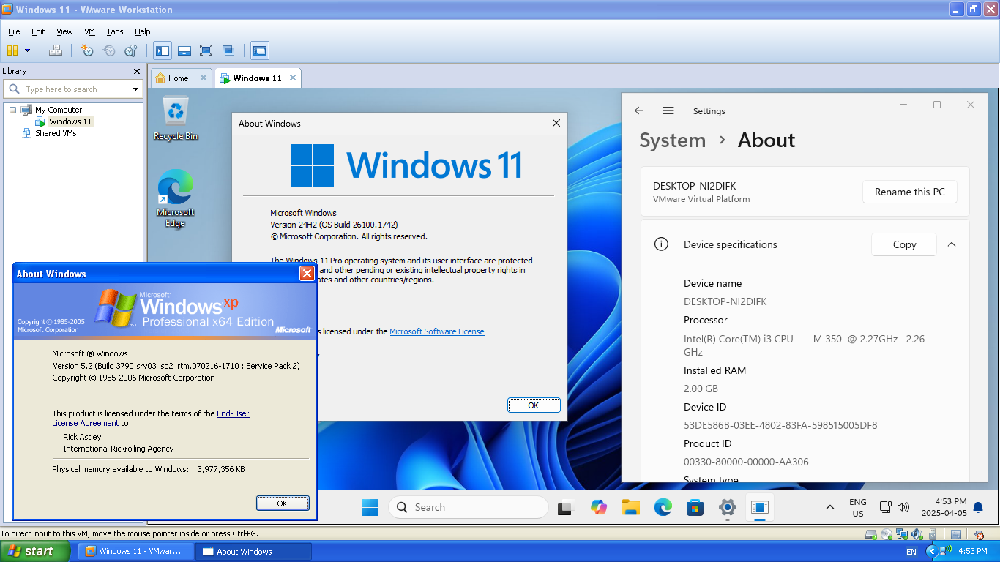